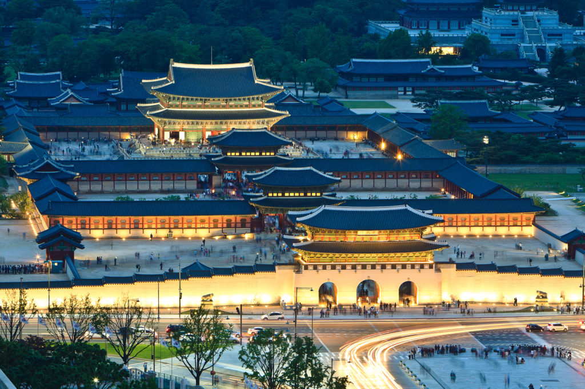
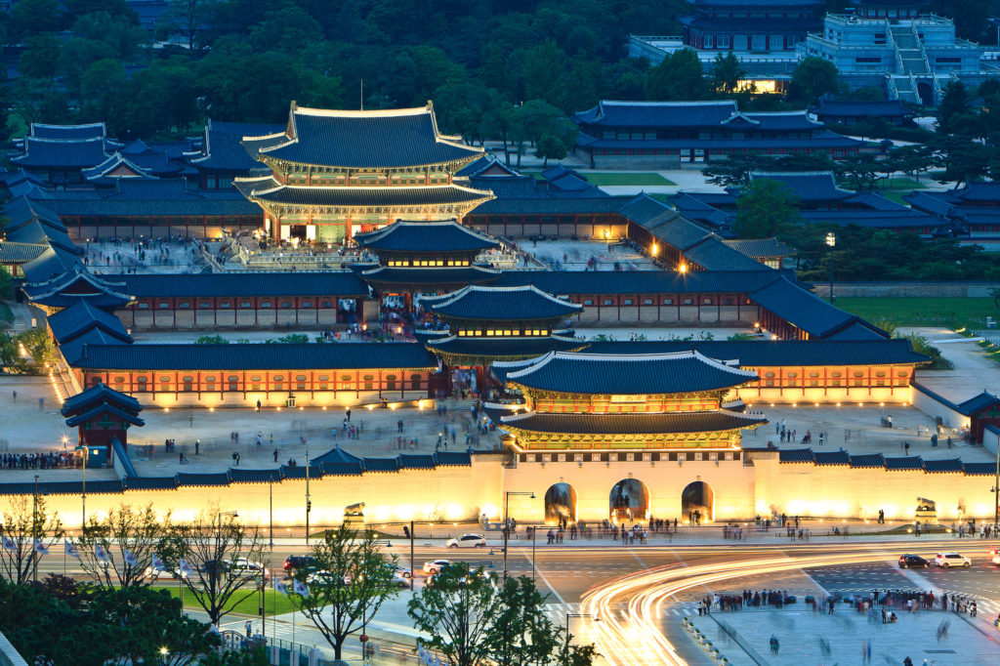

In Korea, when you enter a place of business, you will usually hear the phrase, 어서 오십시오 (eoseo osipsio). This means welcome. South Korea is known for its vibrant pop culture, including K-pop music, Korean dramas (K-dramas), and innovative entertainment industry. Renowned for its delicious cuisine, such as kimchi, bibimbap, and Korean barbecue, South Korea offers a diverse and flavorful culinary experience. The country's technological advancements are impressive, with Samsung and LG among the leading global tech companies. South Korea's rich history and cultural heritage are evident in its ancient palaces, Buddhist temples, and traditional hanbok attire. The nation's rapid economic development, known as the "Miracle on the Han River," has transformed it into a dynamic and thriving society. With its bustling cities, stunning natural landscapes, and warm hospitality, South Korea captivates visitors with its unique blend of tradition and modernity.
Dreaming of visiting Gyeongbokgung Palace in Seoul, South Korea, I've imagined myself stepping into a world of ancient grandeur and royal opulence. The idea of exploring the sprawling palace grounds, adorned with elegant pavilions and lush gardens, fills me with excitement and anticipation. One of the things I'm most eager to experience is witnessing the Changing of the Guard ceremony. The thought of seeing the guards in their traditional attire, performing ceremonial rituals passed down through generations, gives me a sense of awe and reverence for Korea's rich cultural heritage.
Dreaming of wandering through the charming streets of Bukchon Hanok Village in Seoul, South Korea, I imagine myself immersed in a world of timeless beauty and traditional Korean architecture. The thought of exploring this historic neighborhood, with its labyrinth of narrow alleyways and well-preserved hanok houses, fills me with a sense of wonder and anticipation. One of the things I'm most eager to experience is the opportunity to step inside one of these ancient hanok houses and get a glimpse into Korean family life from centuries past. The idea of wandering through the wooden corridors, adorned with delicate paper screens and elegant furnishings, transports me back in time to a bygone era of simplicity and tranquility.
Envisioning a journey to Nami Island in Chuncheon, South Korea, I can't help but imagine myself surrounded by the breathtaking beauty of nature and the serene tranquility of this picturesque island. The thought of exploring its tree-lined paths, dotted with vibrant foliage and dotted with charming cottages, fills me with a sense of adventure and wonder. One of the things I'm most excited about is taking a leisurely stroll along the famous Metasequoia Lane, where towering trees form a natural canopy overhead, creating a tunnel of greenery that stretches as far as the eye can see. The idea of walking hand in hand with loved ones amidst this idyllic setting, with the gentle rustle of leaves and the scent of fresh air filling the air, brings a smile to my face.
 
